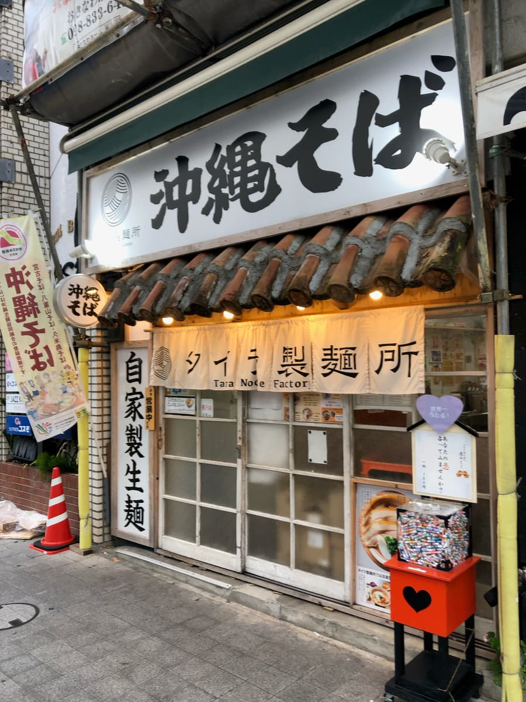
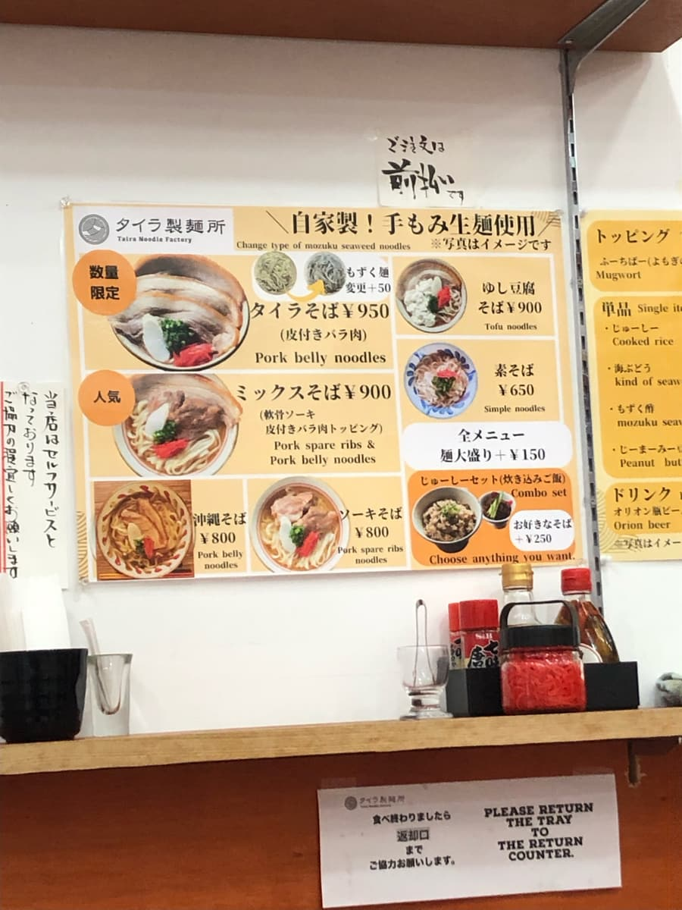
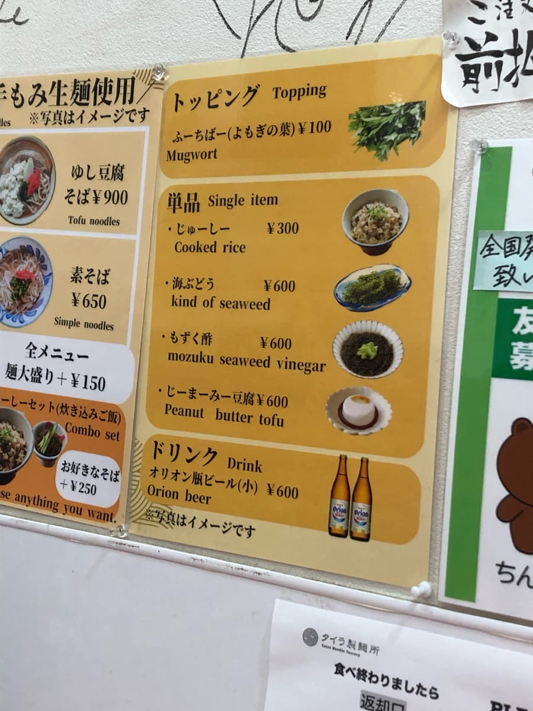
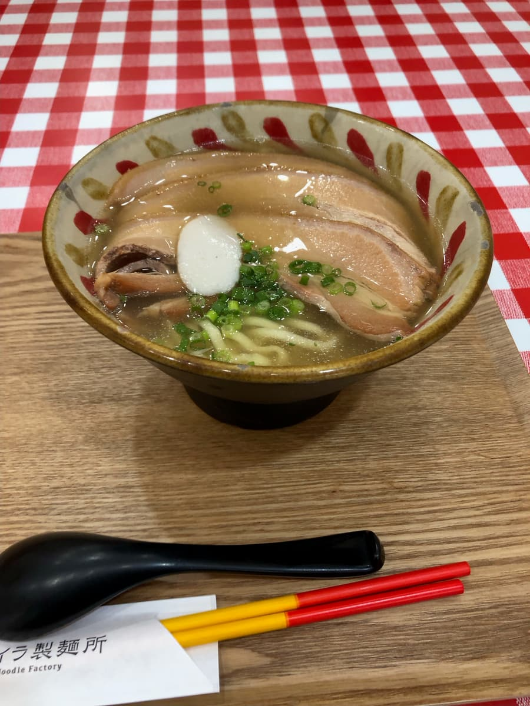
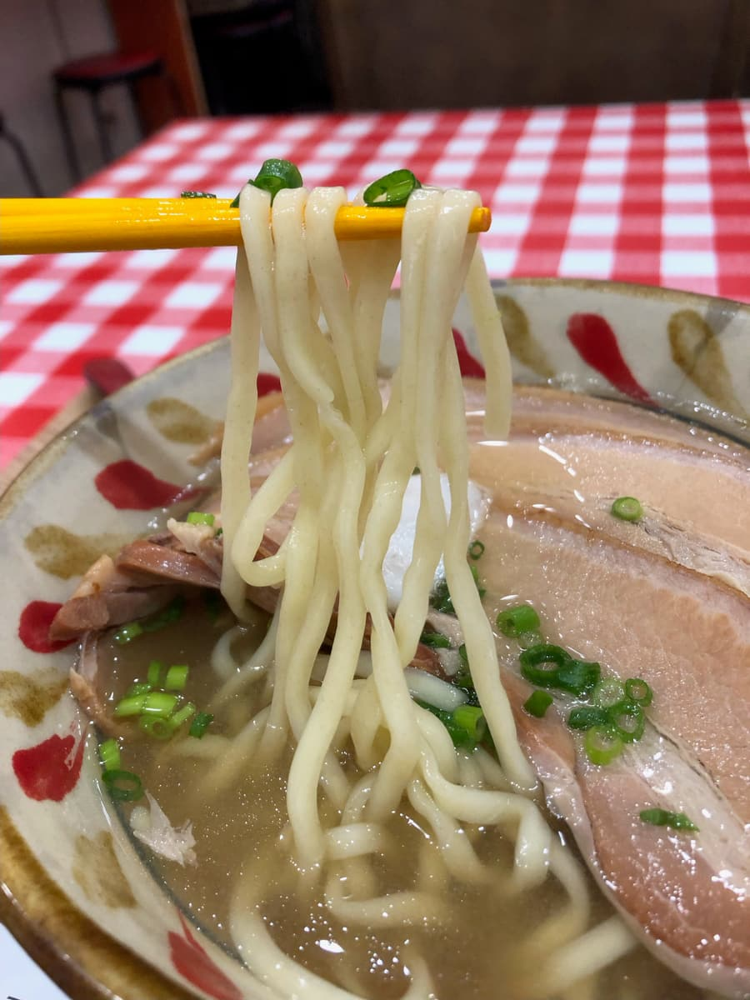

2024.5吃的😆 前阵子第一次参加第13届冲绳面集章活动，第一次制霸（34家，跑完1轮），那次集章活动的颁奖典礼在国际通举行，所以在颁奖典礼前来这里吃了😄



这次菜单中介绍为「数量限定」的「タイラ面」说还有，所以就点了。面好像也可以加50日圆换成水云面，但这个说卖完了，所以选了一般面😄
点餐后等了一阵子，进来了好几笔Uber EATS的订单，外送员来取餐好几次。位在国际通、地点好，看起来很忙呢😁

タイラ面来了。首先喝汤。柴鱼高汤味道十足的汤头，普通好吃呢。

接着吃面。说是自家制生面，是中粗直面类型呢。Q弹的口感，这个也是还不错好吃的感觉。
带皮五花肉像拉面的叉烧一样，切得薄薄的很软，入口即散😋 这个也很好吃呢。
评分（9分/15分）：普通好吃。位在国际通，离单轨电车牧志站很近。推荐在观光空档吃一次看看？Uber EATS的订单好像也很多，看起来很有人气😄
面：★★★☆☆（3）
汤头：★★★☆☆（3）
配料：★★★☆☆（3）